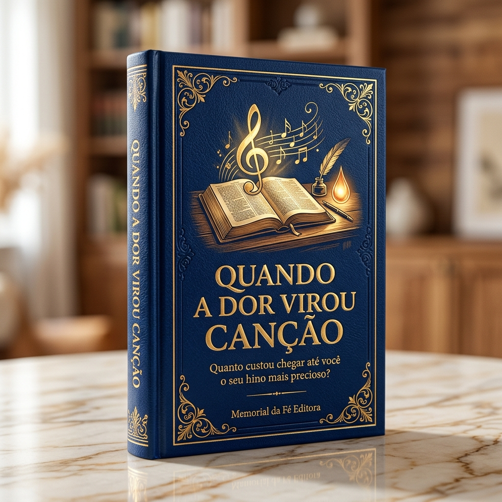

MEMORIAL DA FÉ EDITORA • COLEÇÃO RELÍQUIAS SAGRADAS (VOL. 1)
QUANDO A DOR
VIROU CANÇÃO
Quanto custou chegar até você o seu hino mais precioso?

Naufrágios no Atlântico, noivas perdidas às vésperas do altar, furacões em alto-mar e os acordes finais no convés do Titanic: conheça a fé inabalável de quem transformou a tragédia em louvor eterno.
Edição Oficial • Em parceria com o Canal Ecos da Fé Cristã
youtube.com/@ecosdaf • contato@memorialdafe.com.br
📜 Apresentação: As Lágrimas por Trás da Melodia
Há canções que apenas entretêm os ouvidos por alguns minutos e logo são esquecidas; e há hinos que atravessam séculos inteiros, enxugam lágrimas em leitos de hospital, sustentam famílias enlutadas e parecem carregar um pedaço do próprio Céu em cada palavra.
Por que esses hinos antigos têm tanta autoridade espiritual sobre o nosso coração? A resposta é simples e profundamente comovente: eles custaram caro demais para quem os escreveu. Não foram compostos por busca de fama ou aplauso, mas arrancados da alma no meio de naufrágios, perseguições, perdas irreparáveis e noites escuras onde a única tábua de salvação era a promessa de Jesus Cristo.
📖 Sumário deste Volume
- Capítulo 1: O Naufrágio no Atlântico Norte e as Quatro FilhasHoratio Gates Spafford — "Sou Feliz com Jesus / Tudo Está Bem" (1873)
- Capítulo 2: O Homem que Perdeu Duas Noivas às Vésperas do AltarJoseph Medlicott Scriven — "Em Jesus Amigo Temos" (1855)
- Capítulo 3: O Nascimento de um Bebê num Mundo em ColapsoBill & Gloria Gaither — "Porque Ele Vive" (1970)
- Capítulo 4: O Capitão do Navio Negreiro e o Furacão MortalJohn Newton — "Preciosa Graça (Amazing Grace)" (1748)
- Capítulo 5: O Trovão sobre os Fiordes da SuéciaCarl Gustav Boberg — "Grandioso És Tu" (1885)
- Capítulo 6: A Febre, o Luto e a Revolta diante do MarMary Ann Baker — "Sossegai! Mestre, o Mar se Revolta" (1874)
- Capítulo 7: O Naufrágio do Titanic e o Último Acorde no ConvésSarah Flower Adams & Wallace Hartley — "Mais Perto Quero Estar" (1912)
- Capítulo 8: A Peste Bubônica e a Ameaça da FogueiraMartinho Lutero — "Castelo Forte é Nosso Deus" (1527)
- Capítulo 9: A Zombaria dos Homens e a Visão do GólgotaGeorge Bennard — "A Rude Cruz" (1913)
- Capítulo 10: A Igreja que Não Cantava e o Jovem OusadoIsaac Watts — "Foi na Cruz (Conversão)" (1707)
Capítulo 1: O Naufrágio no Atlântico Norte
🎼 "Sou Feliz com Jesus / Tudo Está Bem (It Is Well with My Soul)" — Horatio Spafford
🌊 A Sucessão de Provas como a de Jó
Em 1870, o respeitado advogado de Chicago Horatio Spafford e sua esposa Anna viram seu único filho homem, Horatio Jr., de apenas quatro anos, falecer vitimado pela febre escarlatina. No ano seguinte, em outubro de 1871, o catastrófico Grande Incêndio de Chicago reduziu a cinzas quase todos os imóveis em que Spafford havia investido as economias da família. Buscando trazer descanso à esposa exausta e colaborar com as campanhas evangelísticas do amigo D. L. Moody na Inglaterra, em novembro de 1873 Horatio embarcou Anna e suas quatro filhas — Annie (11 anos), Maggie (9 anos), Bessie (5 anos) e a pequena Tanetta (2 anos) — no luxuoso vapor francês Ville du Havre, prometendo juntar-se a elas poucos dias depois.
⚡ Doze Minutos nas Águas Geladas
Às duas horas da madrugada de 22 de novembro de 1873, em pleno Atlântico Norte, o Ville du Havre foi violentamente abalroado pelo veleiro de ferro escocês Loch Earn. O navio partiu-se ao meio e afundou na escuridão glacial em apenas doze minutos. No convés inclinado, Anna ajoelhou-se com as quatro filhas nos braços e orou pedindo a Deus que, se fosse a Sua vontade, salvasse as meninas, ou lhes desse graça para morrerem em paz. A força brutal das ondas arrancou até mesmo a bebê de dois anos dos braços da mãe. Duzentas e vinte e seis pessoas pereceram, incluindo as quatro filhas do casal. Anna foi resgatada inconsciente sobre uma prancha de madeira flutuante. Ao desembarcar em Cardiff, no País de Gales, enviou a Chicago o telegrama que entrou para a história: "Salva sozinha. O que devo fazer?"
✍️ O Ponto Exato Onde as Águas Cobriram as Meninas
Horatio tomou imediatamente o primeiro navio rumo à Europa para abraçar a esposa. Na quarta noite de viagem, o capitão chamou Spafford à cabine de comando e disse com voz embargada: "Senhor Spafford, pelos meus cálculos, estamos passando neste exato momento sobre as coordenadas onde o Ville du Havre afundou a três mil metros de profundidade."
Descendo para seu camarote e olhando pela vigia as ondas negras onde dormiam os corpos de suas quatro filhas, o Espírito Santo envolveu aquele pai em uma paz sobrenatural que excede todo o entendimento humano. Pegando papel e caneta, ele escreveu os versos que já enxugaram milhões de lágrimas:
"Quando a paz como um rio seguir o meu rumo, / Quando a dor como as ondas do mar me assolar;
Seja o que for, Tu me ensinas a crer: / Que com a minha alma tudo está bem!
Tudo está bem, tudo está bem! / Com a minha alma, sim, tudo está bem!"
⚓ Versículo Âncora
"Ainda que a figueira não floresça, nem haja fruto na vide... todavia eu me alegrarei no Senhor, exultarei no Deus da minha salvação." — Habacuque 3:17-18
🙏 Oração do Memorial
"Senhor Deus, quando as perdas e as águas profundas tentarem sepultar a minha esperança, firma meus olhos na Tua soberania eterna. Dá-me a graça de declarar, acima de qualquer dor terrena: Tudo vai bem com a minha alma. Em nome de Jesus, Amém."
Capítulo 2: O Homem que Perdeu Duas Noivas às Vésperas do Altar
🎼 "Em Jesus Amigo Temos (What a Friend We Have in Jesus)" — Joseph Scriven
💔 Duas Vezes Diante do Luto
Joseph Medlicott Scriven nasceu em uma família abastada na Irlanda e formou-se pelo prestigiado Trinity College, em Dublin. Em 1844, tudo estava preparado para o seu casamento. Na véspera da cerimônia, sua jovem noiva atravessava a ponte sobre o Rio Bann a cavalo para encontrá-lo quando o animal assustou-se e a lançou nas águas turbulentas. Joseph chegou à margem a tempo apenas de ver o corpo sem vida da amada ser retirado da correnteza.
Com o coração partido, aos vinte e cinco anos ele abandonou a riqueza da família na Irlanda, mudou-se para o Canadá e fez voto de dedicar a vida a servir aos pobres e às viúvas, serrando lenha gratuitamente nas ruas geladas de Port Hope para quem não podia pagar. Mais de uma década depois, seu coração voltou a sorrir quando conheceu a jovem cristã Eliza Catherine Roche. Ficaram noivos, mas após um acidente num lago congelado, Eliza contraiu tuberculose e pneumonia, falecendo em 1860 poucas semanas antes de subirem ao altar.
🕊️ "O Senhor e Eu Escrevemos Juntos"
Em 1855, ao receber a notícia de que sua idosa mãe na Irlanda estava gravemente enferma e não tendo dinheiro para comprar uma passagem de navio para visitá-la, Joseph sentou-se à luz de vela e escreveu um poema particular chamado "Orai Sem Cessar" para enviá-lo dentro de uma carta de consolo à mãe. Ele nunca teve a intenção de que o mundo lesse aqueles versos:
"Em Jesus amigo temos, mais chegado que um irmão!
Ele manda que levemos tudo a Deus em oração!
Oh, que paz perdemos sempre, oh, que dor no coração,
Só porque nós não levamos tudo a Deus em oração!"
Anos mais tarde, quando o próprio Scriven estava doente, um amigo visitou seu quarto humilde, viu uma cópia daqueles versos ao lado da cama e perguntou admirado se ele era o autor. Com humildade profunda, Joseph respondeu: "O Senhor e eu o escrevemos juntos."
⚓ Versículo Âncora
"Não andeis ansiosos de coisa alguma; em tudo, porém, sejam conhecidas, diante de Deus, as vossas petições, pela oração e pela súplica." — Filipenses 4:6
🙏 Oração do Memorial
"Pai Celestial, quando a solidão bater à minha porta e as dores da perda parecerem insuportáveis, ensina-me a não carregar meus fardos sozinho, mas a depositar tudo aos Teus pés em oração. Tu és o meu Amigo fiel em todas as horas. Amém."
Capítulo 3: O Nascimento de um Bebê num Mundo em Colapso
🎼 "Porque Ele Vive (Because He Lives)" — Bill & Gloria Gaither
🌑 O Pânico na Sala de Estar
No final de 1969, os Estados Unidos atravessavam um de seus invernos mais sombrios: milhares de jovens voltavam sem vida da Guerra do Vietnã, protestos violentos incendiavam as cidades, as drogas invadiam as escolas e a frase "Deus está morto" estampava as capas das revistas. No meio daquele furacão social, o casal de professores e compositores Bill e Gloria Gaither enfrentava uma tempestade particular: Bill sofria de uma exaustiva crise de mononucleose que lhe drenava todas as forças, uma pessoa próxima levantava calúnias injustas contra a família e Gloria descobriu que estava grávida de seu terceiro filho.
Na véspera de Ano Novo, sentada sozinha na sala de estar de sua casa em Indiana, Gloria foi tomada por uma onda de angústia e pavor: "Quem em sã consciência traria uma criança indefesa a um mundo tão louco, violento e sem esperança como este?"
☀️ O Túmulo Vazio e o Bebê nos Braços
Poucos meses depois, nasceu o pequeno Benjamin. Quando Gloria e Bill seguraram aquele recém-nascido nos braços, a presença suave do Espírito Santo entrou no quarto como um raio de sol após a tempestade. Uma verdade eterna brilhou no coração de Gloria: o mundo já havia sido ainda mais escuro sob o domínio de Herodes e de César, mas o Filho de Deus venceu a morte e o túmulo continuava vazio! Portanto, o futuro daquele bebê não estava nas mãos dos governantes terrenos, mas nas mãos furadas pelos cravos do Cristo Vivo:
"Quão doce é ter um recém-nascido nos braços, / E sentir o orgulho e a alegria que ele traz;
Mas maior ainda é a calma certeza: / Esta criança pode enfrentar dias incertos, porque Ele vive!
Porque Ele vive, posso crer no amanhã! / Porque Ele vive, temor não há!
Mas eu bem sei, eu sei, que a minha vida / Está nas mãos do meu Jesus, que vivo está!"
⚓ Versículo Âncora
"Eu sou o que vivo; fui morto, mas eis que estou vivo pelos séculos dos séculos!" — Apocalipse 1:18
🙏 Oração do Memorial
"Jesus Ressurreto, dissipa todo o medo do nosso amanhã e do futuro dos nossos filhos e netos. Que as incertezas deste mundo jamais nos paralisem, pois a nossa família está guardada nas mãos Daquele que venceu a própria sepultura. Amém."
Capítulo 4: O Capitão Negreiro e o Furacão no Atlântico
🎼 "Preciosa Graça (Amazing Grace)" — John Newton
⛓️ O Homem que Até os Marinheiros Temiam
John Newton perdeu a mãe cristã aos seis anos de idade, mas antes de morrer ela havia plantado versículos bíblicos na memória do menino. Na juventude, porém, ao embarcar nos navios da marinha e da marinha mercante, Newton tornou-se tão rebelde, blasfemo e violento que os próprios capitães diziam que ele inventava novos palavrões nunca antes ouvidos nos portos. Abandonado na costa da Serra Leoa, chegou a viver acorrentado e faminto sob o domínio de um traficante até ser resgatado, passando ele mesmo a trabalhar e comandar navios que transportavam africanos escravizados.
🌊 Onze Horas Bombeando Água no Escuro
Na madrugada de 10 de março de 1748, enquanto retornava para a Inglaterra a bordo do navio Greyhound, um furacão colossal atingiu a embarcação na costa norte da Irlanda. Parte do costado foi arrancada pelas ondas gigantescas, um marinheiro foi varrido ao mar a poucos passos de Newton e os porões encheram-se de água. Após onze horas ininterruptas amarrado às bombas d'água com as mãos em carne viva, sabendo que o navio afundaria a qualquer minuto, aquele ateu zombador deixou escapar do fundo da alma um grito que o próprio coração dele não ouvia desde a infância: "Senhor, tem misericórdia de nós!"
Milagrosamente, a carga de madeira e cera de abelha moveu-se no porão, vedando a fenda no casco, e o vento mudou de direção, levando o navio destroçado até um porto seguro. Newton nunca mais esqueceu o dia 10 de março. Anos depois, abandonou para sempre o comércio negreiro, tornou-se pastor em Olney, foi o mentor espiritual do deputado William Wilberforce na luta que aboliu a escravidão em todo o Império Britânico e escreveu sua própria autobiografia cantada:
"Preciosa graça de Jesus, / Que a um miserável como eu salvou!
Perdido estava, mas Ele me achou; / Era cego, e agora eu vejo!"
Aos oitenta e dois anos, quase cego e prestes a partir para a eternidade, Newton resumiu sua vida em uma frase inesquecível: "Minha memória está quase toda apagada, mas de duas coisas eu me lembro perfeitamente bem: que eu sou um grande pecador, e que Cristo é um grande Salvador!"
⚓ Versículo Âncora
"Porque pela graça sois salvos, mediante a fé; e isto não vem de vós; é dom de Deus." — Efésios 2:8
🙏 Oração do Memorial
"Deus de infinita misericórdia, Tua graça alcança o mais profundo abismo e resgata o coração mais distante. Obrigado por não desistires de nós e por transformares o nosso passado sombrio em um testemunho vivo da Tua redenção. Amém."
Capítulo 5: O Trovão sobre os Fiordes da Suécia
🎼 "Grandioso És Tu (O Store Gud / How Great Thou Art)" — Carl Boberg
⚡ A Tempestade em Kronobäck e o Sino ao Longe
Em uma tarde de verão de 1885, o jovem pregador sueco Carl Gustav Boberg, então com vinte e cinco anos, caminhava pela bela região costeira de Mönsterås após participar de uma reunião cristã. De repente, nuvens negras fecharam o horizonte sobre o Mar Báltico e uma tempestade elétrica violenta desabou sobre a floresta. Relâmpagos rasgavam o céu e trovões faziam tremer o chão sob os pés do jovem pastor.
Tão repentinamente quanto viera, a tormenta cessou. Uma calmaria cristalina cobriu a baía de Kronobäck, um arco-íris brilhou sobre as águas, as aves voltaram a cantar nos galhos molhados e, ao longe, o sino de uma igreja tocou anunciando o cair da tarde. Cheio de temor reverente diante da grandeza do Criador, Boberg chegou em casa, abriu a janela e escreveu as nove estrofes de "O Store Gud":
"Senhor meu Deus, quando eu, maravilhado,
Fico a pensar nas obras de Tuas mãos,
No céu azul de estrelas pontilhado,
O Teu poder mostrando a criação...
Então a minh'alma canta a Ti, Senhor:
Grandioso és Tu! Grandioso és Tu!"
Décadas depois, o missionário inglês Stuart K. Hine ouviu camponeses convertidos cantarem esse hino em russo nas montanhas dos Cárpatos, na Ucrânia, pouco antes da Segunda Guerra Mundial. Profundamente emocionado com a devoção daqueles irmãos perseguidos, Hine traduziu o cântico e acrescentou a estrofe final sobre a volta gloriosa de Cristo ("Quando afinal, em resplendor e glória, Jesus abrir as portas da mansão..."), tornando-o um dos dois hinos mais amados de toda a história cristã.
⚓ Versículo Âncora
"Os céus proclamam a glória de Deus, e o firmamento anuncia as obras das suas mãos." — Salmos 19:1
🙏 Oração do Memorial
"Criador Soberano do céu e da terra, quando as tempestades da vida rugirem ao nosso redor, que consigamos enxergar a Tua majestade e o Teu domínio por trás de cada nuvem. Tu és maior que qualquer problema. Grandioso és Tu! Amém."
Capítulo 6: A Febre, o Luto e a Revolta diante do Mar
🎼 "Sossegai! Mestre, o Mar se Revolta (Peace, Be Still)" — Mary Ann Baker
🥀 O Irmão que Partiu Sozinho na Flórida
Mary Ann Baker e sua irmã já haviam perdido o pai e a mãe vítimas da implacável tuberculose ("peste branca" do século dezenove). Restava-lhes apenas o jovem irmão mais novo, que era o arrimo, a alegria e o protetor da casa em Chicago. Porém, no início da década de 1870, o rapaz começou a tossir sangue: a mesma doença fatal havia atingido seus pulmões.
Desesperadas para salvar a vida do irmão, as duas jovens juntaram cada moeda que possuíam para enviá-lo ao clima quente da Flórida, conforme recomendação médica, enquanto elas ficaram trabalhando em Chicago sem dinheiro sequer para acompanhá-lo na viagem. Durante semanas, oraram dia e noite pedindo a cura do rapaz. Mas a resposta que chegou pelo correio foi um telegrama gelado comunicando que o irmão havia morrido na Flórida e já fora enterrado longe delas.
🌊 Quando o Próprio Coração Era o Mar em Fúria
O choque foi devastador. Mary Ann confessou mais tarde que, naqueles dias, seu coração se encheu de amargura e revolta contra Deus: "Eu sempre criei que Deus se importava comigo, mas por que Ele fechou os ouvidos às nossas orações e deixou meu irmão morrer sozinho?"
Naquele mesmo período, o maestro H. R. Palmer pediu que Mary escrevesse alguns hinos sobre as lições bíblicas da Escola Dominical, e o tema da semana era justamente Cristo acalmando a tempestade no Mar da Galileia (Marcos 4:37-41). Ao ler o grito desesperado e injusto dos discípulos contra Jesus — "Mestre, não se Te dá que pereçamos?" —, Mary viu o espelho exato de sua própria alma revoltada! E quando leu a resposta serena do Salvador repreendendo o vento ("Cala-te, enmudece!"), o Espírito Santo quebrou o gelo do seu luto e acalmou o mar de sua dor:
"Mestre, o mar se revolta, as ondas nos dão pavor!
O céu se reveste de trevas, não temos um Salvador!
Não se Te dá que morramos? Podes assim dormir?
...As ondas atendem ao Meu mandar: Sossegai!
Seja o encapelado mar, a ira dos homens, o gênio do mal,
Tais águas não podem a nau tragar, que leva o Mestre do céu e mar!"
⚓ Versículo Âncora
"E Ele, despertando, repreendeu o vento e disse ao mar: Cala-te, emudece! E o vento se aquietou, e houve grande bonança." — Marcos 4:39
🙏 Oração do Memorial
"Mestre do Céu e do Mar, perdoa-nos quando, no desespero da dor, achamos que Tu estás dormindo ou indiferente às nossas lágrimas. Ordena hoje o Teu 'Sossegai!' sobre as tormentas da nossa mente e da nossa família. Amém."
Capítulo 7: O Naufrágio do Titanic e o Último Acorde no Convés
🎼 "Mais Perto Quero Estar (Nearer, My God, to Thee)" — Sarah Adams & Wallace Hartley
🪨 O Travesseiro de Pedra de Jacó
Em 1841, a jovem poetisa inglesa Sarah Flower Adams (que sofria de saúde frágil e faleceria prematuramente aos quarenta e três anos cuidando da irmã tuberculosa) meditava na história de Jacó em Gênesis 28. Fugindo sozinho pelo deserto na escuridão da noite, Jacó deitou a cabeça sobre uma pedra fria como travesseiro e, justamente no lugar mais duro e solitário de sua vida, viu em sonho uma escada que tocava o Céu com os anjos de Deus subindo e descendo. Sarah compreendeu que muitas vezes a pedra dura do nosso sofrimento é o próprio degrau pelo qual subimos mais perto de Deus:
"Mais perto quero estar, meu Deus, de Ti!
Inda que seja a dor que me una a Ti;
Mesmo na escuridão, meu travesseiro será uma pedra,
E nos meus sonhos estarei mais perto, meu Deus, de Ti!"
🎻 O Violino de Wallace Hartley na Madrugada de 15 de Abril de 1912
Setenta e um anos depois, esse poema protagonizou um dos momentos mais sublimes de coragem cristã da história moderna. O jovem violinista metodista inglês Wallace Henry Hartley (33 anos) fora convidado para liderar a orquestra de bordo na viagem inaugural do transatlântico RMS Titanic. Meses antes, em uma entrevista ao jornal de sua igreja, perguntaram a Wallace o que ele faria se um dia estivesse em um navio naufragando; ele respondeu sem hesitar: "Eu sei que tocaria o hino 'Mais Perto Quero Estar, Meu Deus, de Ti'."
Às 23h40 de 14 de abril de 1912, o Titanic colidiu com o iceberg. Sabendo que havia botes para menos da metade das duas mil e duzentas pessoas a bordo e que as águas a dois graus negativos matariam qualquer um em minutos, Wallace Hartley e seus sete companheiros músicos não correram para disputar lugar nos botes. Vestiram seus coletes salva-vidas, posicionaram-se no convés gelado e tocaram ininterruptamente para evitar o pânico e ajudar mulheres e crianças a embarcarem.
Às 2h15 da madrugada, quando o último bote se afastou e a proa do navio mergulhou para o abismo, sobreviventes como Vera Dick e Archibald Gracie testemunharam que os oito músicos permaneceram lado a lado no convés inclinado, puxando os arcos de seus violinos nas notas solenes de "Mais Perto Quero Estar, Meu Deus, de Ti" até que as ondas os cobrissem. Dez dias depois, quando resgataram o corpo de Wallace Hartley do oceano, encontraram amarrado ao seu peito o estojo de couro com o violino que sua noiva Maria Robinson lhe dera de presente — um testemunho eterno de que nem as águas da morte podem calar um adorador.
⚓ Versículo Âncora
"Chegai-vos a Deus, e Ele se chegará a vós." — Tiago 4:8
🙏 Oração do Memorial
"Pai Amado, que até mesmo as pedras duras do caminho e as noites mais frias da nossa jornada sirvam como degraus para nos aproximar do Teu coração. Na vida e na eternidade, nosso único desejo é estar mais perto de Ti. Amém."
Capítulo 8: A Peste Bubônica e a Ameaça da Fogueira
🎼 "Castelo Forte é Nosso Deus (Ein feste Burg)" — Martinho Lutero
🛡️ O Ano Mais Sombrio da Reforma (1527)
O ano de 1527 foi o período de maior tribulação na vida de Martinho Lutero. Condenado como fora da lei pelo Édito de Worms (o que significava que qualquer pessoa podia matá-lo sem responder por crime), ele acabara de receber a notícia devastadora de que seu querido amigo e colaborador, o pastor Leonhard Kaiser, fora queimado vivo em uma fogueira na Baviera por pregar o Evangelho. Ao mesmo tempo, Lutero sofria de vertigens severas, problemas cardíacos e crises espirituais profundas.
Para agravar o quadro, em agosto de 1527 a temida Peste Bubônica (Peste Negra) invadiu a cidade universitária de Wittenberg. O príncipe eleitor ordenou que todos os professores e alunos fugissem imediatamente para Jena. Lutero, porém, cuja esposa Katharina von Bora estava grávida de seu segundo filho, recusou-se a abandonar o rebanho doente e transformou o antigo mosteiro onde morava em um hospital para acolher os empestados que agonizavam sem socorro.
🏰 O Salmo 46 Cantado Contra as Trevas
Cercado pelos gemidos dos moribundos dentro da própria casa, vendo seu filhinho Hans adoecer gravemente e sabendo que as forças do Império queriam sua cabeça, onde Lutero buscava coragem? Sempre que as notícias pareciam insuportáveis, ele chamava seu amigo Philipp Melanchthon e dizia: "Venha, Philipp, vamos cantar o Salmo 46!"
Pegando seu alaúde, Lutero compôs a letra e a melodia marcial que ressoaria pelos séculos como o brado de vitória da Igreja perseguida:
"Castelo forte é nosso Deus, espada e bom escudo!
Com Seu poder defende os Seus em todo transe agudo!
...A nossa força nada faz; estamos, sim, perdidos;
Mas nosso Deus socorro traz e somos protegidos!
Defende-nos Jesus, o que venceu na cruz:
Senhor dos altos céus! E, sendo o próprio Deus,
Triunfa na batalha!
Se nos quisessem devorar demônios não contados,
Não nos podiam assustar, nem somos derrotados!
...Se nos arrebatar os bens, a vida, os filhos, o lar,
Tudo isso pode perecer: o Reino de Deus há de permanecer!"
⚓ Versículo Âncora
"Deus é o nosso refúgio e fortaleza, socorro bem presente na angústia. Portanto, não temeremos, ainda que a terra se mude!" — Salmos 46:1-2
🙏 Oração do Memorial
"Senhor dos Exércitos, Tu és o nosso Castelo Forte e escudo inabalável. Quando o mal parecer avançar e a nossa força humana falhar, lembra-nos de que Jesus Cristo já triunfou na cruz e que o Teu Reino jamais será abalado. Amém."
Capítulo 9: A Zombaria dos Homens e a Visão do Gólgota
🎼 "A Rude Cruz (The Old Rugged Cross)" — George Bennard
⛏️ Do Fundo da Mina de Carvão ao Púlpito
George Bennard nasceu em Ohio em 1873 e cresceu na dura cidade mineradora de Lucas, em Iowa. Quando tinha apenas dezesseis anos e sonhava em estudar para ser pregador, seu pai faleceu repentinamente. Sem hesitar, o adolescente George desceu às minas escuras de carvão para trabalhar turnos exaustivos a fim de sustentar a mãe viúva e suas quatro irmãs mais novas. Mais tarde, ingressou no Exército da Salvação e tornou-se evangelista itinerante.
🪵 O Escárnio que Gerou o Hino mais Amado sobre o Calvário
No final de 1912, enquanto conduzia uma campanha evangelística em Michigan, George Bennard foi alvo de dura zombaria por parte de jovens rebeldes e críticos que debochavam da pregação do sangue de Jesus. Ferido na alma pelo desprezo com que o mundo tratava o sacrifício de Cristo, Bennard passou semanas orando e meditando dia e noite no significado da Cruz. Ele dizia aos amigos: "Eu via o Cristo da cruz não apenas como um símbolo dourado na parede, mas como o centro vivo de toda a redenção."
Isolado em oração em Albion, Michigan, a melodia e os versos vieram ao seu coração com tal nitidez que ele pegou seu violão e cantou para a esposa pela primeira vez a obra-prima da sua vida:
"Num monte distante ergueu-se uma cruz, / Emblema de afronta e de dor;
Mas eu amo essa cruz, onde o meu bom Jesus / Deu a vida por mim, pecador!
Sim, eu amo a mensagem da cruz, / Té morrer eu a vou proclamar;
Levarei eu também minha cruz, / Té por uma coroa trocar!"
⚓ Versículo Âncora
"Mas longe esteja de mim gloriar-me, a não ser na cruz de nosso Senhor Jesus Cristo." — Gálatas 6:14
🙏 Oração do Memorial
"Amado Salvador, nunca permitas que nos envergonhemos da Tua rude cruz diante de um mundo que zomba da fé. Que possamos abraçar a mensagem do Calvário com amor e fidelidade até o dia em que trocaremos a cruz terrena pela coroa da glória. Amém."
Capítulo 10: A Igreja que Não Cantava e o Jovem Ousado
🎼 "Foi na Cruz (Alas! and Did My Saviour Bleed)" — Isaac Watts
🔇 Quando a Mãe Amamentava o Bebê na Porta da Prisão
O nascimento de Isaac Watts (1674–1748), considerado o "Pai da Hinologia Cristã", já começou debaixo de lágrimas: quando ele ainda era um bebê de colo em Southampton, seu pai foi jogado na prisão pelas autoridades inglesas por recusar-se a abandonar sua fé evangélica congregacional. Durante meses, a mãe de Isaac sentava-se sobre uma pedra fria em frente às grades da cadeia para amamentar o pequeno Isaac e mostrar o menino ao pai preso.
Naquela época, as igrejas inglesas viviam um congelamento musical: era proibido cantar qualquer hino que falasse diretamente do nome de Jesus ou da experiência da graça; permitia-se apenas recitar salmos métricos arrastados, sem emoção e sem vida. Aos quinze anos de idade, voltando de um culto monótono, o jovem Isaac comentou com tristeza: "Pai, a forma como cantamos na igreja parece que não conhecemos a alegria da salvação de Cristo!". Seu pai desafiou-o na hora: "Então dê-nos algo melhor para cantar no próximo domingo, meu filho!"
🩸 O Hino que Abriu os Olhos dos Cegos
Isaac subiu para o seu quarto e, no domingo seguinte, entregou à congregação seu primeiro hino baseado em Apocalipse 5 ("Eis o Cordeiro de Deus no trono!"). A igreja inteira chorou ao cantar! Mesmo sofrendo de uma saúde extremamente debilitada (ele media apenas um metro e meio de altura e passou trinta e seis anos acamado ou recolhido na casa de amigos que o acolheram), Watts escreveu mais de setecentos e cinquenta hinos que revolucionaram o culto cristão para sempre.
Em 1707, contemplando o sangue derramado no Gólgota, escreveu a joia que na nossa Harpa Cristã se tornaria o amado Hino nº 15:
"Oh! Quão cego andei e perdido vaguei, / Longe, longe do meu Salvador!
Mas do céu Ele desceu, e Seu sangue verteu / Pra salvar um tão pobre pecador!
Foi na cruz, foi na cruz, onde um dia eu vi
Meu pecado castigado em Jesus!
Foi ali, pela fé, que os meus olhos abri,
E agora me alegro em Sua luz!"
⚓ Versículo Âncora
"Ele foi ferido pelas nossas transgressões e moído pelas nossas iniquidades; o castigo que nos traz a paz estava sobre Ele, e pelas Suas pisaduras fomos sarados." — Isaías 53:5
🙏 Oração do Memorial
"Senhor Jesus, nunca deixes que o nosso coração se acostume com o milagre do Calvário. Foi na Tua cruz que a nossa cegueira caiu por terra e a nossa dívida foi apagada para sempre. Recebe hoje o nosso mais profundo louvor e gratidão. Amém."
🎵 Ouça Estas Relíquias Cantadas no Nosso Canal
A Memorial da Fé Editora caminha lado a lado com o canal oficial Ecos da Fé Cristã no YouTube, onde Angel Lee & Candace Betel dão voz aos hinos mais amados da história cristã para levar paz, consolo e adoração ao seu lar.
📚 Continue Sua Leitura com as Demais Obras da Nossa Editora:
- Hinos Escritos com Lágrimas (Volume 2): Nossa Harpa Cristã e o custo de cada relíquia que cantamos! (Fanny Crosby, Graças Dou, Amor que por Amor Desceste, Tu És Fiel Senhor, Noite Feliz, Os Pioneiros da Harpa e mais).
- Chamas Vivas do Céu: A História Épica dos Grandes Avivamentos (De Pentecostes e as primeiras três mil almas em Atos dos Apóstolos até os nossos dias).
- Devocional 7 Dias de Oração & Paz no Lar: Orações diárias em voz alta com 14 hinos clicáveis (pay.kiwify.com.br/rItelcl).

🤝 Oferta Voluntária de Amor para a Obra:
Deseja apoiar voluntariamente a produção de novos louvores semanais e literaturas cristãs do nosso ministério? Aponte a câmera do aplicativo do seu banco para o QR Code ao lado ou utilize nossa chave oficial:
🔑 Chave PIX (E-mail): contato@memorialdafe.com.br
(Titular MEI: Sandro da Silva Pinto)
Que o Senhor multiplique ricamente a sua semente de fé!